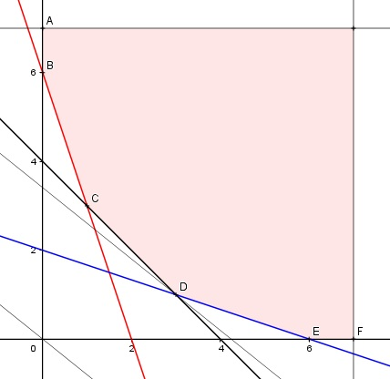

Aufgabe 81 In der Grube 1 fördern 50 Arbeiter 9 t Groberz, 3 t Mittelerz und 6 t Feinerz pro Tag. In Grube 2 fördern 75 Arbeiter 3 t, 3 t und 18 t. Wöchentlich können mindestens 18 t Groberz, 12 t Mittelerz und 36 t Feinerz verarbeitet werden. Wie viele Tage wird in jeder Grube gefördert, wenn die Betriebskosten pro Tag und Tonne in Grube 1 300 €, in Grube 2 280 € betragen und sie minimal sein sollen? x = Anzahl Tage in Grube 1 y = Anzahl Tage in Grube 2 Bedingungen: 0 < x ≤ 7 x ∈ ℕ 0 < y ≤ 7 y ∈ ℕ 9x + 3y ≥ 18 3x + 3y ≥ 12 6x + 18y ≥ 36 Zielfunktion: Fördermenge in Grube 1 = 9 t + 3 t + 6 t = 18 t Fördermenge in Grube 2 = 3 t + 3 t + 18 t = 24 t K = 300 * 18x + 280 * 24y K = 5 400x + 6 720y Randgerade 1: y = 7 Randgerade 2: 9x + 3y = 18 Randgerade 3: 3x + 3y = 12 Randgerade 4: 6x + 18y = 36 Randgerade 5: x = 7

Die Eckpunkte A, B, C, D, E und F bilden das Planungsgebiet, das alle Ungleichungen erfüllt. Eckpunkt A ist der Schnittpunkt der Randgerade 1 mit x = 0 A(0|7). Eckpunkt B ist der Schnittpunkt der Randgerade 2 mit x = 0 9 * 0 + 3y = 18 |:3 y = 6 B(0|6) Eckpunkt C ist der Schnittpunkt der Randgeraden 2 und 3 9x + 3y = 18 |-9x 3y = 18 - 9x |:3 y = 6 - 3x Eingesetzt: 3x + 3 * (6 - 3x) = 12 3x + 18 - 9x = 12 |+6x - 12 6x = 6 |:6 x = 1 y = 6 - 3 = 3 C(1|3) Eckpunkt D ist der Schnittpunkt der Randgeraden 3 und 4 3x + 3y = 12 |:3 x + y = 4 |-x y = 4 - x Eingesetzt: 6x + 18 * (4 - x) = 36 6x + 72 - 18x = 36 |+12x - 36 12x = 36 |:12 x = 3 y = 4 - 3 = 1 D(3|1) Eckpunkt E ist der Schnittpunkt der Randgerade 4 mit y = 0 6x + 18 * 0 = 36 |:6 x = 6 E(6|0) Eckpunkt F ist der Schnittpunkt der Randgerade 5 mit y = 0 F(7|0) Die Parallele der Zielfunktion K liegt in D am tiefsten --> Die Betriebskosten sind dann am geringsten, wenn in Grube 1 3 Tage und in Grube 2 1 Tag gefördert wird, und betragen Kmin = 5 400 * 3 + 6 720 * 1 = 22 920 €